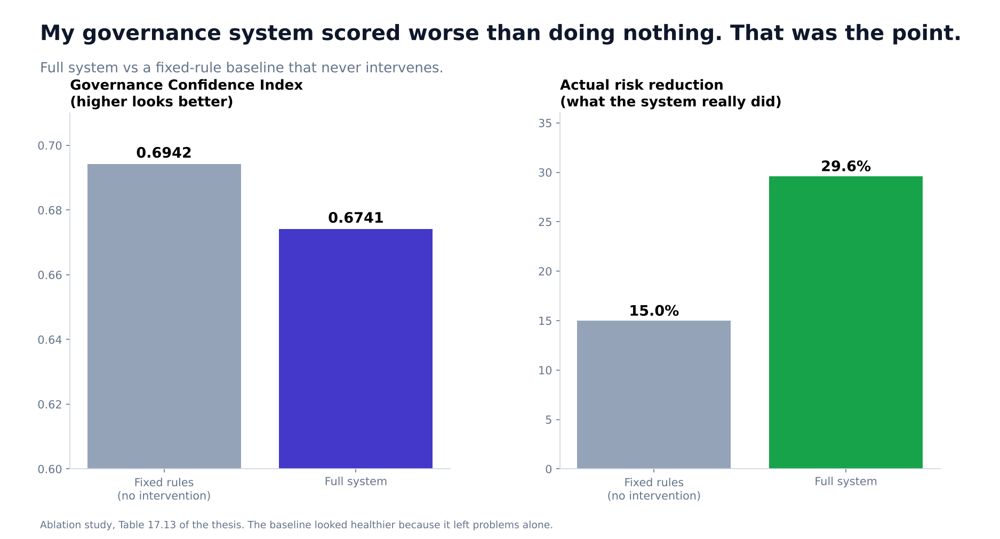
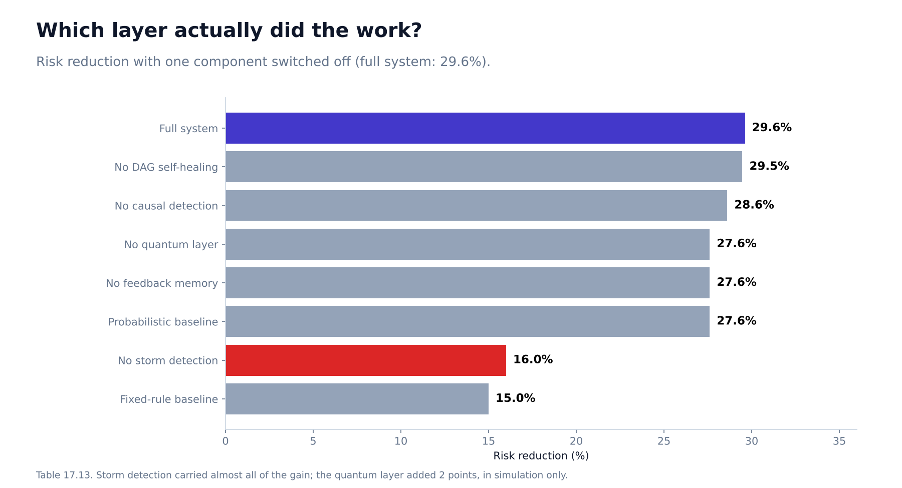
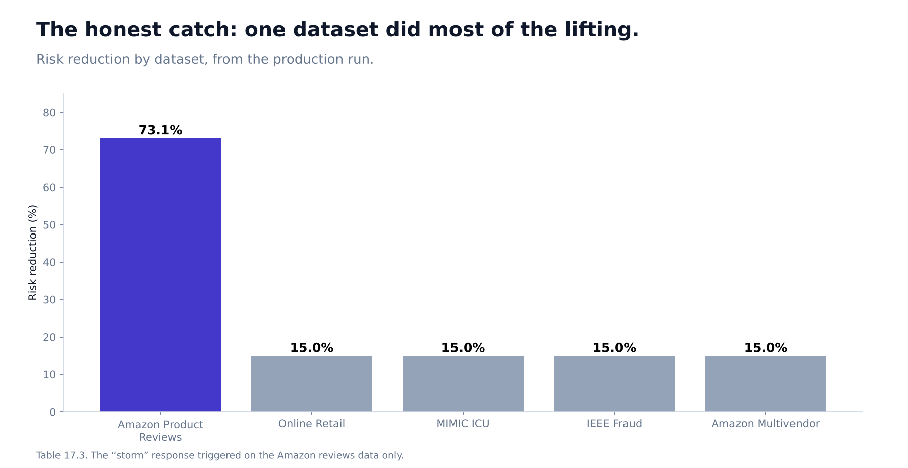
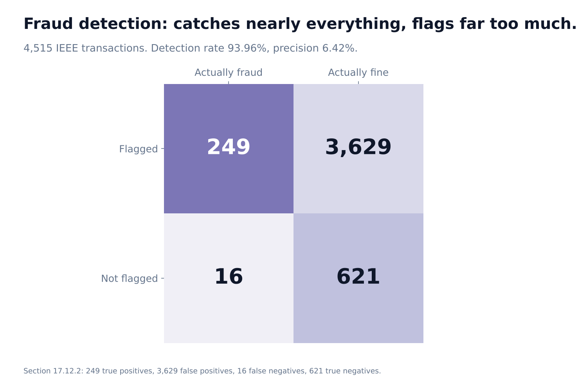

My Governance System Scored Worse Than Doing Nothing. That Was the Point.
An AI orchestration framework, five real datasets, and the one metric that was lying to me.

My best-looking dashboard number was a lie, and I can tell you exactly why.
I built a framework called Predictive Quantum Governance. It sits around data pipelines and decides, per run, how much to trust them. It scores governance risk, detects "information storms", throttles dangerous inputs, heals broken workflows, and can even consult a small quantum circuit. When I compared the full system to a fixed-rule baseline that does nothing adaptive, the baseline had the higher Governance Confidence Index: 0.6942 against 0.6741.
If I had stopped there, I would have concluded my system was worse.
What the metric was really measuring
The fixed baseline looked healthier because it was passively reporting. It left risky pipelines running and scored itself on how it felt about them. The full system intervened, sometimes dropping a run into a restricted "validate only" mode where its confidence is deliberately low. Lower confidence, because it noticed real problems.
The number that tells the real story is risk reduction: 29.62% for the full system, 15.00% for the baseline. Almost twice as much risk actually removed.
A system that looks less confident because it is looking harder at the problem is not a worse system. But you only see that if you stop trusting one index.
What is in the box
The thesis describes a stack of governance layers (56 in all) around a metadata-driven pipeline:
- GCI, the Governance Confidence Index: combines maturity, volatility, stability, amplification instability and predictive instability, and re-weights itself when risk signals are active.
- CIS, the Cognitive Integrity Score: measures narrative consistency, semantic drift and AI-generated content density in text.
- Storm detection: spots amplification storms in engagement and throttles them.
- Causal and graph layers: detect risk using causal structure and heal broken task graphs.
- A quantum decision layer: one to four qubit circuits in Qiskit, fused with classical signals.
- A tamper-evident decision ledger: every governance decision hashed and auditable.
I tested it on five real datasets: Amazon product reviews, an online-retail ledger, MIMIC ICU monitoring, IEEE fraud transactions and Amazon multivendor reviews.
Which layer actually did the work?
I switched components off one at a time.

Removing storm detection dropped risk reduction from 29.62% to 16.00%, nearly down to the baseline's 15%. Removing the quantum layer cost 2 points (29.62% to 27.61%). Removing DAG self-healing or causal detection cost under 2 points each.
So I will not claim all 56 layers earn their place. One of them carried the result.
The honest catch

Four of the five datasets got the same 15% reduction from standard dampening. The fifth, Amazon product reviews, triggered an extreme-level storm (forecast probability 1.0), was throttled and dropped into safe mode, and got 73.1%. That single dataset lifts the five-dataset average. This is why a headline like "27 to 30% reduction across domains" would overstate what the data shows. It is one strong case and four ordinary ones.
Fraud detection: catches nearly everything, flags far too much

On the fraud data, the system detected 93.96% of fraud (249 of 265). But precision was 6.42%: it flagged 3,878 transactions to find those 249. For a governance layer that routes cases to human review, that might be acceptable. For automatic blocking, it would not be.
What I would not claim
- The quantum results are from the Qiskit Aer simulator, not real hardware. The quantum layer's contribution is small (about 2 points) and simulated.
- Everything ran on a single machine. Multi-node consensus is simulated.
- The simulation modules (digital twin, civilisation-collapse simulator and others) are stress-test vehicles, not predictions about society.
- Risk weights were calibrated on the same five datasets I evaluated on.
What I would tell you
- Before you trust a metric, ask what a system that does nothing would score on it.
- Run the one-layer-off ablation on your own system. It will humble you quickly.
- An average across datasets can hide that one dataset did the work.
- A high-recall detector with 6% precision is a triage tool, not a decision-maker.